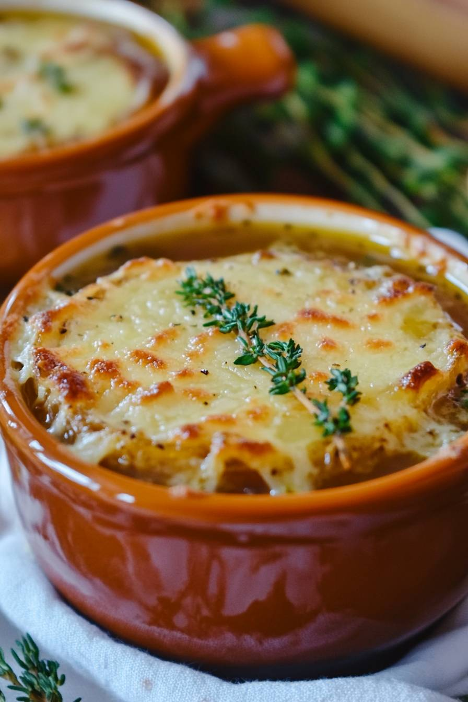

French Onion Soup Recipe

Prep Time: 15 minutes | Cook Time: 30minutes | Servings: 2
I detest a long story that I have to scroll through to get to a recipe, so I won't torture you with that.
Here it is:
Ingredients:
5-6 large yellow onions, peeled and thinly sliced
8 cups beef stock (or vegetable stock for a vegetarian option)
1 cup dry white wine (optional)
1 tablespoon Worcestershire sauce
2-3 cloves garlic, minced
Fresh thyme (or dried thyme)
Instructions:
1. In a large pot, melt the butter over medium heat. Add the sliced onions and a pinch of salt, cooking slowly until caramelized (about 40-45 minutes).
2. Stir in the garlic, Worcestershire sauce, and thyme, cooking for another minute.
3. Add the wine (if using) and beef stock, bringing to a boil. Reduce heat and simmer for 30 minutes.
4. Preheat the broiler. Ladle the soup into oven-safe bowls, top with baguette slices and cheese, and broil until the cheese is melted and bubbly.